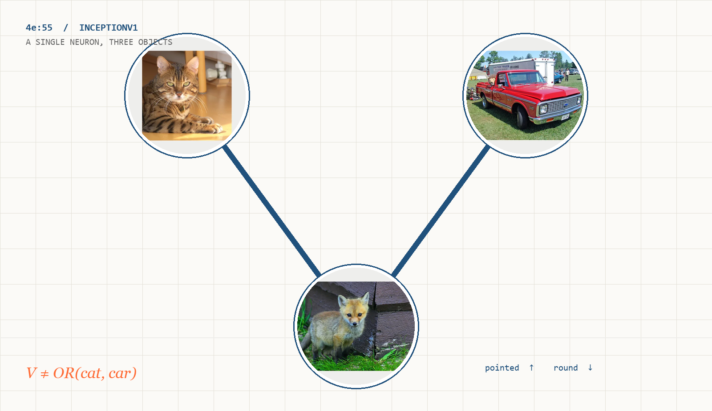
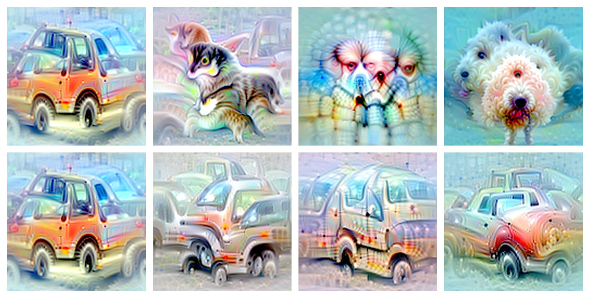
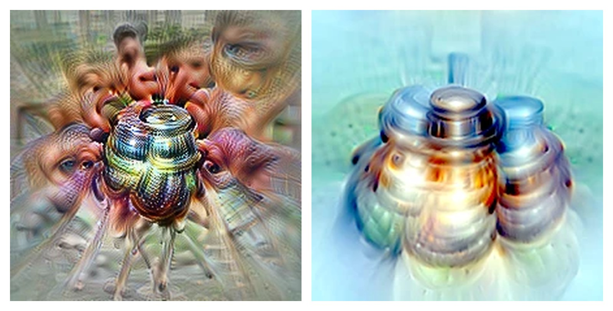
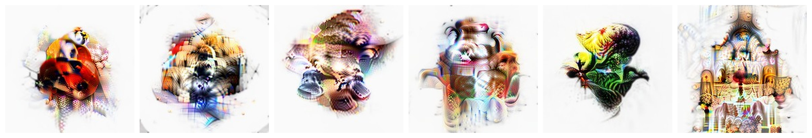

神经网络，
已经干净了吗？
A Working Hypothesis
2026-10-15（2026-10-30 修订）· 工作假说 · 非同行评审 · 65 min read
曾参与 OpenAI 早期机械可解释性研究；Zoom In 共同作者

一句话：不是超位置被推翻，而是它不再是唯一解释
论文真正提供的是一套可被反驳的研究纲领，不是一个已经封箱的结论
容量不够 → 任意叠加
维度不够，网络把无关特征放进共享方向；单个神经元因此不可读，必须先训练 SAE 分解。
相关功能 → 递归生长
神经元沿已有回路扩展出相关分支；多义来自“树枝”，原生神经元可以直接研究。
强假说，不是定论
经典案例被重新解释，但核心机制仍缺训练轨迹证据与全模型抽样。独立检验也没有复刻 90%。
四个词，先有个概念
没读过论文也没关系，先把几个词说清楚
神经元
网络中的一个数值单元。本文主要讨论视觉通道和 Transformer 的 MLP 神经元，不是生物神经元。
特征
网络内部被表征的属性、模式或区分。它不一定是人类名词，也可能是动作、关系或“正极对负极”的判断。
多义神经元
看起来承担多个互不相关任务的神经元。“看起来”很重要：它依赖解释者的框架和工具。
超位置
特征数量超过表示维度时，多个特征共享方向。标准定义强调“维度不够”，不是“只有无关特征才叫超位置”。
旧路线不是偷懒：如果表示真的不够用，先分解是合理选择
容量约束 → 单元不可读 → 训练 SAE → 在特征层做科学
01 · 容量约束
需要表示的特征多于可用维度；网络可以把特征放到共享方向上，代价是干扰和不可读。
02 · 先分解
训练稀疏自编码器（Sparse Autoencoder, SAE），把混合激活重建为稀疏特征；再在特征层做电路分析。
03 · 在字典上做科学
研究者得到一份可审计的特征清单，试图回答“模型里有哪些概念、它们如何相连”。
混合表示
稀疏约束
SAE 的目标不是“解释网络”，而是用少量活跃单元重建原激活。它是中介，不是原网络。
过去十年，领域从“看神经元”退到“先拆网络”
这不是一次轻率的转向；每一站都有当时的理由
经典“猫车神经元”：共同点是 V 形，而非“猫或车”
同一个 4e:55，对尖形 / 双侧尖形更兴奋，对圆形更负向

看到什么
猫脸、狐狸吻部、车头、台球桌角、新干线车头，都可能共享一个双侧尖形结构；圆形、钝、闭合的形状偏向负极。
作者自己的修订
不能说它“只是一个 V 检测器”。它是卷积神经元，确实接收猫、狐狸、车等上游探测器；“V”解释的是为什么这些对象被归在一起。
这页证明什么
“任意混合”不是唯一读法，共享结构可能存在。但它不能单独证明 4e:55 的完整机制。
经典“车入狗电路”：看到的可能是共享姿态，不是高维藏匿
同一组权重，换一种可视化，故事从“藏匿”变成“复用”

2019 读法
车被藏进一组狗神经元，像放进一个高维储物格，下游再取出来。
2026 重看
用自然车图像路径引导后，原本的“狗”里出现了车；另一些同时响应车与狗的朝向。
工具也会骗人
自由特征可视化在深层容易 reward hack（优化钻指标的空子）：InceptionV1 里狗很多，优化很容易掉进狗这条路。
递归泛化：多义性更像树枝，不像杂物抽屉
神经元先抓住一个核心区分，再沿相邻用例长出分支；末端可能离起点很远
两种解释的分水岭：共享是因为“像”，还是因为“不打架”
超位置与递归泛化，对“为什么共享”给出不同答案
| 比较项 | 超位置 / Superposition | 递归泛化 / Recursive generalization |
|---|---|---|
| 共享对象 | 可以无关，甚至刻意选不相关的 | 相关、相邻、可沿语义或功能路径追溯 |
| 共享原因 | 容量不足，避免同时激活造成干扰 | 复用已有回路，降低学习边际成本 |
| 可学习结构 | 几乎没有；分组方式接近任意 | 有；分支反映训练中形成的组织 |
| 对解释者的含义 | 必须先分解，才能研究 | 可以顺着原网络的分支读 |
为什么整个领域会看错？三个普通问题叠加
架构、工具、样本，三者都会制造“乱”
深层学不好
InceptionV1 的深层没有 residual、LayerNorm 等现代结构；后期层本身学得吃力，看起来就像一团乱麻。
工具会制造“乱”
特征可视化在深层 reward hack；自动解释器不能做“猜想—实验”闭环；指标奖励“能模拟激活”，而不是“解释正确”。
小模型更“多义”
早期研究多用小模型或简化模型。容量小，神经元更宽、更粗，天然更像“多义”；经典案例又容易被反复引用。

只换架构，最后一层变成 99–100% 可读
参数量与训练数据不变，只加入 residual（残差连接）、LayerNorm（层归一化）等现代结构

Qwen3-32B：90% 单主功能，样本非全模型
作者初步审计：90% 一个主功能，7% 两个相关功能，2–4% 未解释
| 公开数据审计 | 结果 |
|---|---|
| Evidence Press 对 100 个 pole 抽查 | 86 / 100 |
| 加上“一个想法 + 未放置案例” | 94 / 100 |
| gallery 中来自后半网络的比例 | 71% |
| 评审方式 | Claude Opus 5.5 判读 |
作者脚注：只看强激活时，约 97% 非任意混合，但样本较小。
2023 基线
GPT-2 XL 的自动解释只有约 1.7% 达到最宽松标准；小型单层模型的 median 评分是 0 / 14。模型、工具、评分都不同，不能直接比较。
怎么读
从 1.7% 到 90%，可能来自模型更好、工具更好、评分更松，或三者兼有。论文的主张是“值得认真看”，不是“90% 已是全模型事实”。
只看单个神经元，会漏掉电路
电路常常只有几个节点；正极和负极都要看
万亿参数模型也能读出钱包路径
Kimi K3：一个 prompt，一张 neuron-only 归因图；不是系统审计
输入事实
这笔钱不是我的
没人看见也不改变
输出行为
报告判断：这证明“可以这样读”，不证明“已经读懂”。
从“列清单”到“画地图”：两种可解释性
Enumerative 想要完整清单；Exploratory 想回答具体问题
先提取所有特征，再理解计算
优点是能盘点、能比较；难点是“什么算一个特征”很难闭合，一个神经元可能对应多个特征。成功标准容易变成重建质量与覆盖率。
先问问题，再在机制之间缩放
从问题出发，在神经元、电路、注意力、数据之间缩放；允许暂时忽略无关区域。成功标准是解释能否预测和干预。
Agent 把科学方法变成实验循环
观察 → 假设 → 干预 → 反例；吞吐量放大，可信度不自动放大
神经元 / 电路
它到底在做什么
消融 / 引导
盲测 / 近失手
1000 份神经元报告
Agent 批量写解释、做复审、生成可浏览的“显微镜”；人类从逐个人工看，转向设计检验。
数十万张归因图
把一次前向计算拆成节点和边，追踪信息从哪些神经元来、又流向哪里。
盲测最大激活
一个 agent 只看解释写句子，再拿回原网络测激活；解释错了，会当场露馅。
独立检验没有复刻 90%，但也没有把论文打成废纸
三项检验，三种证据层级
78.3% vs ≈90%
部分支持原文：神经元比随机方向更有结构，解释能预测激活。但“只有一个主功能”的比例更低。
会前材料转述；未检索到公开原文，按待核处理。
3 组标准实验
合成 V、镜像姿态、10 神经元压缩都没有支持论文对 4e:55 与“车—狗姿态”的最强解释。
2026-10-20；还指出论文使用了较窄、非标准的 superposition 定义。
两种机制可以共存
递归泛化与超位置可以同时出现，而不是互相排斥。这直接削弱了“二选一”的叙事。
会前材料转述；未核到公开原文，按二手材料处理。
对经典案例的反驳：V 形与姿态都未过检验
Liv Gorton 用合成刺激、镜像、压缩三组实验重看最强例证
| 检验 | 结果 | 含义 |
|---|---|---|
| 合成 V 刺激 | 约 25% 最大激活 | 和层内数百个神经元没有明显差别；把 V 变圆，响应也不下降。 |
| 镜像姿态 | 97–99% | 真正的左右朝向姿态神经元镜像后中位数只有 25–54%。 |
| 压缩到 10 个神经元 | 傅里叶模态 | 曲线检测器按方向形成傅里叶模态；在标准定义下，这正是超位置。 |
作者 2026-10-30 修订：不能说 4e:55 “只是一个 V 检测器”；争点变成“这些对象为什么被归在一起”。
把主张拆开：证据强度表
有些已被支持，有些还只是合理猜想
| 主张 | 现有证据 | 判断 |
|---|---|---|
| 原生神经元是实用的解释与电路单位 | Transluce 的 neuron-basis 电路；小模型消融复现；公开 gallery 自洽 | 较稳 |
| Qwen3-32B 约 90% 的 pole 只有一个主功能 | 作者初步审计；gallery 非全模型随机抽样，评审是模型判断 | 未定 |
| 递归泛化解释了大多数表观多义性 | 有案例与机制直觉；缺训练轨迹上的直接预测与干预 | 未定 |
| 可以直接读懂前沿闭源大模型 | Kimi K3 的单 prompt 演示；尚无全模型审计或独立复现 | 未证明 |
| 理解神经元 ≈ 理解整个模型 | 概念跳跃；注意力、训练动态、分布外行为都未覆盖 | 未证明 |
评级为本报告的综合判断；随 companion paper、全模型抽样和独立复现变化。
我的判断：把默认假设变回可检验问题
我接受什么、保留什么、下一步做什么
经典叙事不够稳
工具和架构确实会制造多义性；原生神经元应该回到工具箱；“解释能否预测和干预”比“听起来合理”更重要。
强版本还缺证据
“相关”不等于“不是超位置”；终点可读不证明发育机制；90% 是对样本的判读，不是对全模型的测量。
把争论变成实验
预注册、全模型随机抽样；在训练中改变数据相关性 / 容量，看功能如何长出来；同一任务上比较 neuron、SAE、probe。
可读不等于可控，更不等于安全
定位、干预、信任，是三层不同的问题
定位
找到与行为相关的神经元 / 电路。医疗诊断 hub、钱包归还路径、Santa 负极门控，都是“能定位”的早期案例。
状态：有案例。
干预
消融、引导、训练后修复。如果机制可读，就有可能在训练后修正具体问题，而不只依赖事前设计。
状态：早期证据。
信任
知道解释何时错、覆盖了什么。分布外、罕见行为、对抗输入、训练动态，都还没有系统答案。
状态：几乎空白。
五个还没解决的问题
定义、抽样、动态、工具、规模
| 问题 | 为什么重要 |
|---|---|
| 定义 | 什么算“一个功能”？阈值变，90% 就变。弱激活、相关习语、双语近义词算不算“同一个东西”，不同判读者会给出不同答案。 |
| 抽样 | 公开的 500 个 Qwen3-32B 神经元中，71% 来自后半网络。没有抽样框、随机种子和纳入概率，就无法外推到全模型。 |
| 动态 | 递归泛化是一个关于“如何长出来”的主张；现有证据大多拍的是“长成之后”。终点可读，不能区分多种发育故事。 |
| 工具 | agent 评审可能奖励“像解释”的文本；特征可视化会 reward hack；SAE 可能把一条完整回路切成多个“特征”。 |
| 规模 | Kimi K3 只有一个 prompt、一张图；闭源模型不开放权重和内部激活，独立审计无从谈起。注意力的理解也远落后于神经元。 |
网络可能更有结构，但“已经干净”仍是假说
更稳妥的结论：超位置从默认答案降为待证机制
超位置不再是默认
它从“默认答案”降为“需要证明的一种机制”；原生神经元与电路重新回到主工具箱。
先读，再分解
先读网络自己的组织，再决定是否分解。SAE 仍然有用，但不再是唯一入口。
有希望，但别保证
可解释性有希望，但不能用单个案例替代系统验证；可读、可控、安全是三层问题。
材料、代码与讨论
数字都能在前页脚注或下面的材料里找到出处
原文
Nick Cammarata — Neural Networks Are Already Clean, Goodfire, 2026-10-15（2026-10-30 修订）
already-clean.goodfire.com
独立检验
Liv Gorton — Some initial thoughts on “Neural Networks Are Already Clean”, 2026-10-20
Evidence Press — Are Neural Networks Already Clean?, 2026-10-20
背景与工具
Zoom In: An Introduction to Circuits (2020)
Toy Models of Superposition (2022)
Transluce — Language model circuits are sparse in the neuron basis (2025)
如果 90% 只是 gallery，它对全模型意味着什么？
递归泛化需要什么样的训练轨迹证据？
可解释性要满足什么条件，才能用于安全干预？